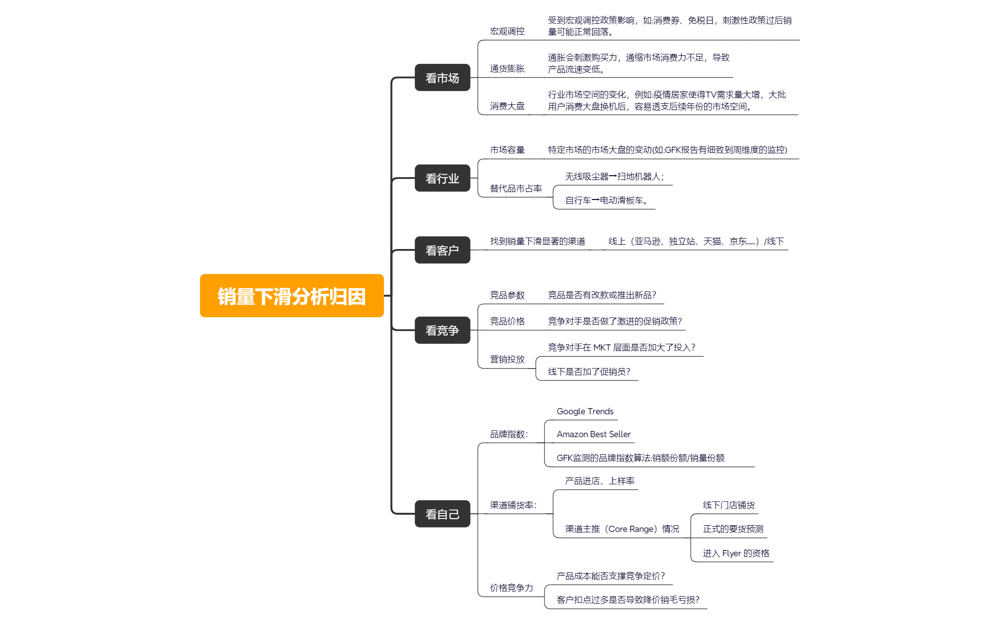

结构正文
销量下滑分析归因
- 销量下滑分析归因
- 看市场
- 宏观调控
- 受到宏观调控政策影响，如:消费券、免税日，刺激性政策过后销量可能正常回落。
- 通货膨胀
- 通胀会刺激购买力，通缩市场消费力不足，导致产品流速变低。
- 消费大盘
- 行业市场空间的变化，例如:疫情居家使得TV需求量大增，大批用户消费大盘换机后，容易透支后续年份的市场空间。
- 宏观调控
- 看行业
- 市场容量
- 特定市场的市场大盘的变动(如:GFK报告有细致到周维度的监控)
- 替代品市占率
- 无线吸尘器→扫地机器人；
- 自行车→电动滑板车。
- 市场容量
- 看客户
- 找到销量下滑显著的渠道
- 线上（亚马逊、独立站、天猫、京东......）/线下
- 找到销量下滑显著的渠道
- 看竞争
- 竞品参数
- 竞品是否有改款或推出新品？
- 竞品价格
- 竞争对手是否做了激进的促销政策?
- 营销投放
- 竞争对手在 MKT 层面是否加大了投入？
- 线下是否加了促销员？
- 竞品参数
- 看自己
- 品牌指数：
- Google Trends
- Amazon Best Seller
- GFK监测的品牌指数算法:销额份额/销量份额
- 渠道铺货率：
- 产品进店、上样率
- 渠道主推（Core Range）情况
- 线下门店铺货
- 正式的要货预测
- 进入 Flyer 的资格
- 价格竞争力
- 产品成本能否支撑竞争定价？
- 客户扣点过多是否导致降价销毛亏损？
- 品牌指数：
- 看市场
查看原导图预览
